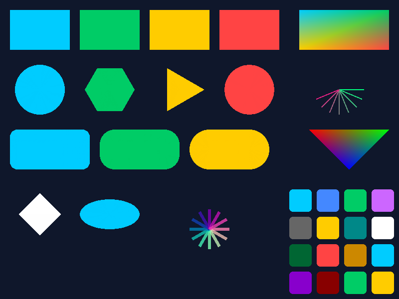

nexcore-softrender — CPU rasterizer test
Pure Rust, zero deps, edge-function triangle fill, barycentric interpolation

52 tests passed — 15 source files — 0 dependencies
Row 1: rects + gradient | Row 2: circle, hexagon, triangle, starburst | Row 3: rounded rects + RGB tri | Row 4: transforms + Lex Primitiva grid